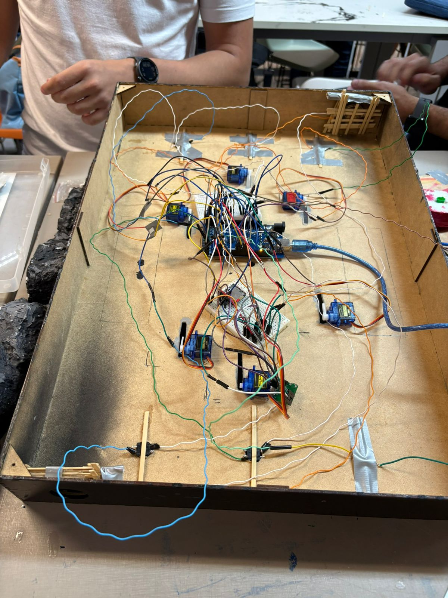
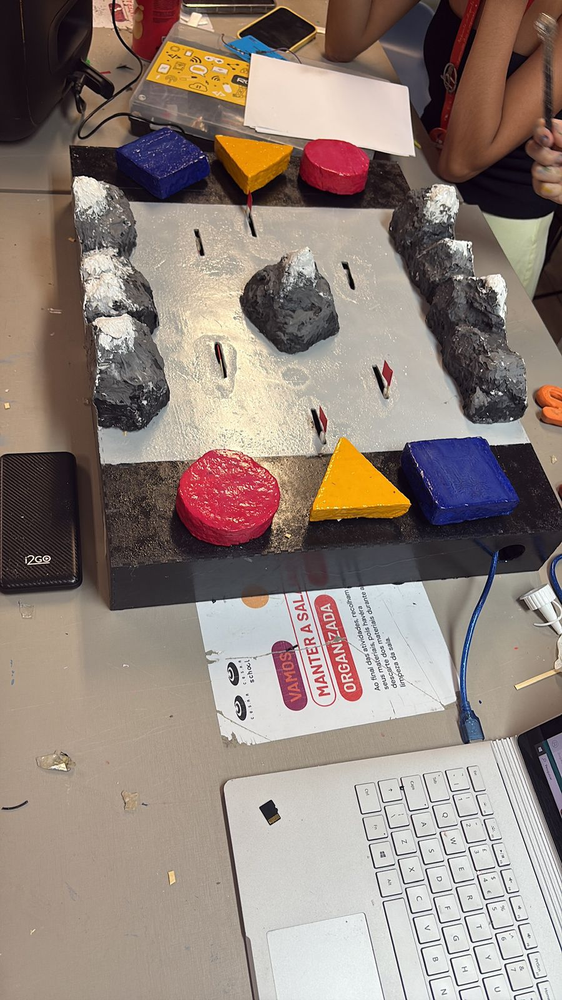

Artefato de Projeto 1
 
Para o meu primeiro grande artefato, desenvolvi um Tabuleiro Interativo com Arduino, um projeto que une eletrônica física e programação para criar uma experiência de jogo dinâmica e envolvente para deficientes visuais. O objetivo foi construir, do zero, um sistema que respondesse às ações do usuário em tempo real, com foco em explorar a audição e o tato, servindo como uma plataforma versátil para jogos ou demonstrações educacionais.
O cérebro do projeto é uma placa Arduino MEGA, que foi programada em C++ para processar as interações captadas por push buttons espalhados pelo tabuleiro. Como resposta, o sistema fornece feedback instantâneo através de servos motores e um alto-falante que emite narrações para eventos importantes, como o início/fim de uma rodada, feedback de acerto e erro, explicação de minigames e até fim de uma partida.
O maior desafio foi a integração entre hardware e software, garantindo que o código respondesse de forma precisa e sem atrasos. Este projeto foi fundamental para solidificar meus conhecimentos em eletrônica, programação em C/C++ para microcontroladores e resolução de problemas.